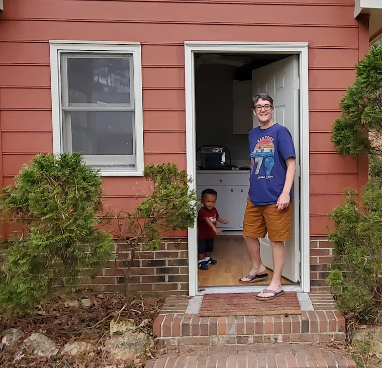

About Laura Stigen
My name is Laura Stigen. I live in North Carolina with my wife and 4 kids. I am a former Special Education teacher who found herself staying home when COVID hit. I studied Art at Beloit College and now spend my days creating art and gardens with my family. I create my work out of a little red studio on 2.5 acres of land. We garden, have ducks and bunnies and many trees to enjoy working both inside and out. I work in abstract mediums, follow my feelings and am inspired by the nature and wonderful chaos of family life!
Prior to working in art and education I had an adventurous life of travel. I lived in the woods of Georgia for year working with young people who were discovering how to navigate their environments. I lived in Hungary for a couple of years playing soccer and teaching English. There I was able to travel and see so many things that have inspired me along the way. All the way, I had a sketch book and was able to continue panting and creating.
